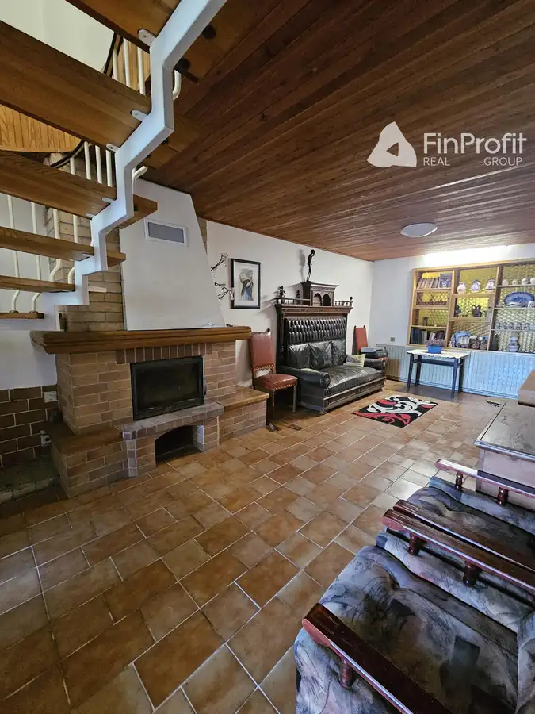
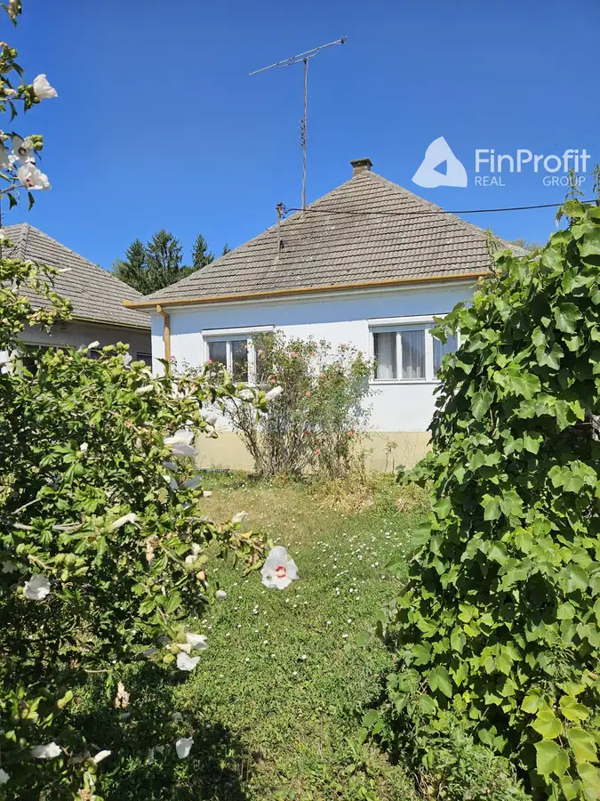
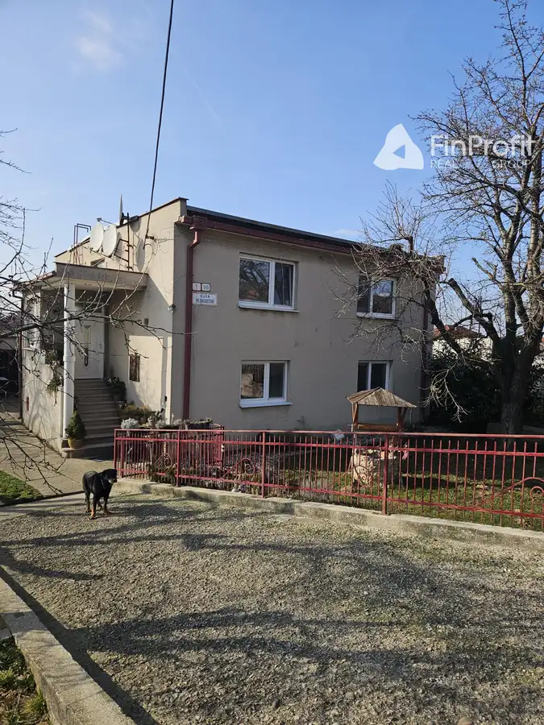

Na predaj rekreačný pozemok v krásnom prírodnom prostredí - Beckov
Nové Mesto nad Váhom
- Plocha494 m²
- VlastníctvoOsobné
O nehnuteľnosti
Na predaj rekreačný pozemok v krásnom prírodnom prostredí Ponúkame na predaj slnečný rekreačný pozemok o výmere 494 m², nachádzajúci sa v pokojnej lokalite obklopenej prírodou, ideálny pre milovníkov ticha, relaxu a víkendového oddychu. Pozemok je bez inžinierskych sietí, čo ponúka možnosť vytvoriť si sebestačný víkendový úkryt mimo ruchu mesta. Na pozemku je možnosť výstavby víkendovej chatky alebo rekreačného domčeka. Prístupová cesta je k dispozícii štrková Okolie je ideálne na turistiku, cyklistiku alebo len pokojný relax v lone prírody.Lokalita ponúka krásne výhľady, čistý vzduch a ticho, ktoré dnes už nie je samozrejmosťou. Ak hľadáte miesto, kde si postavíte svoju vysnívanú víkendovú chatku alebo len investíciu do prírody, tento pozemok je skvelou voľbou. Pre viac informácií alebo obhliadku ma neváhajte kontaktovať: Ak Vás táto ponuka zaujala, s radosťou Vám túto nehnuteľnosť odprezentujem osobne. Kontaktujte ma telefonicky: 0905 826 703, alebo mailom: bartovicova.reality@gmail.com
Parametre
| Druh | Rekreačný pozemok |
|---|---|
| Dátum zverejnenia | 5. 10. 2025 |
| Elektrina | Nedostupné |
| Odpadové vody | Nedostupné |
| Plocha pozemku | 494 m² |
| Plyn | Nedostupné |
| Pripravenosť k výstavbe | Predbežný súhlas |
| Prístupová komunikácia | Štrková |
| Terén pozemku | Svahovitý |
| Typ | Predaj |
| Vlastníctvo | Osobné |
| Voda | Nedostupné |
Kde to je


Mohlo by Vás zaujímať

DomNové10 195 000 €Rodinný dom v meste Myjava – s obrovským potenciálom Myjava 250 m² Ponúkame na predaj krásny a veľmi zachovalý rodinný dom v radovej zástavbe v tichej a pokojnej časti mesta Myjava. Nehnuteľnosť zaujme svojím…
DomNové10 145 000 €Na predaj rodinný dom v obci Ratnovce s krásnym pozemkom 1202m2 Ratnovce 150 m² Ponúkame na predaj veľmi zachovalý 2-izbový rodinný dom v obci Ratnovce, len pár minút od Piešťan. Dom sa nachádza na rovinatom pozemku o výmere 1200…
DomNové10 230 000 €Priestranný rodinný dom s potenciálom dvojgeneračného bývania – Sokolovce pri Piešťanoch Sokolovce 336 m² Ponúkame na predaj priestranný rodinný dom v obci Sokolovce, len pár minút od kúpeľného mesta Piešťany. Nehnuteľnosť sa nachádza na pozemku s výmerou…